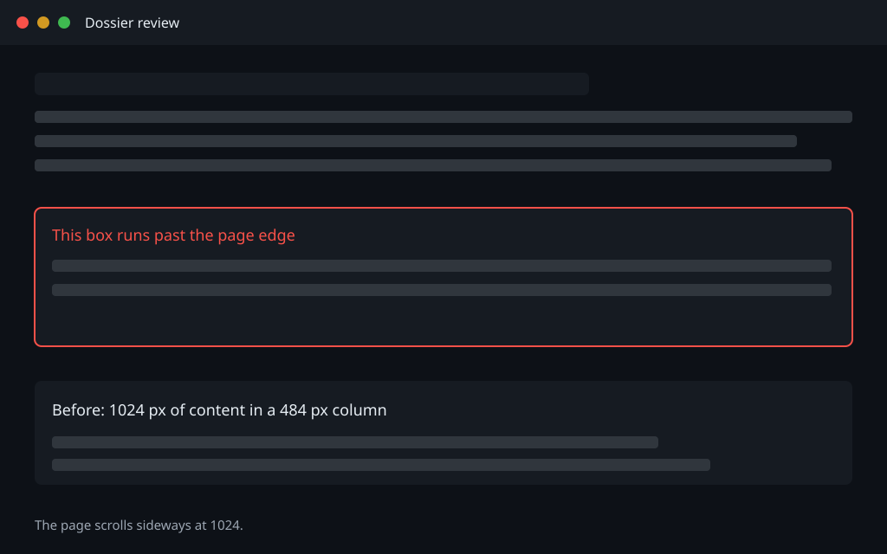
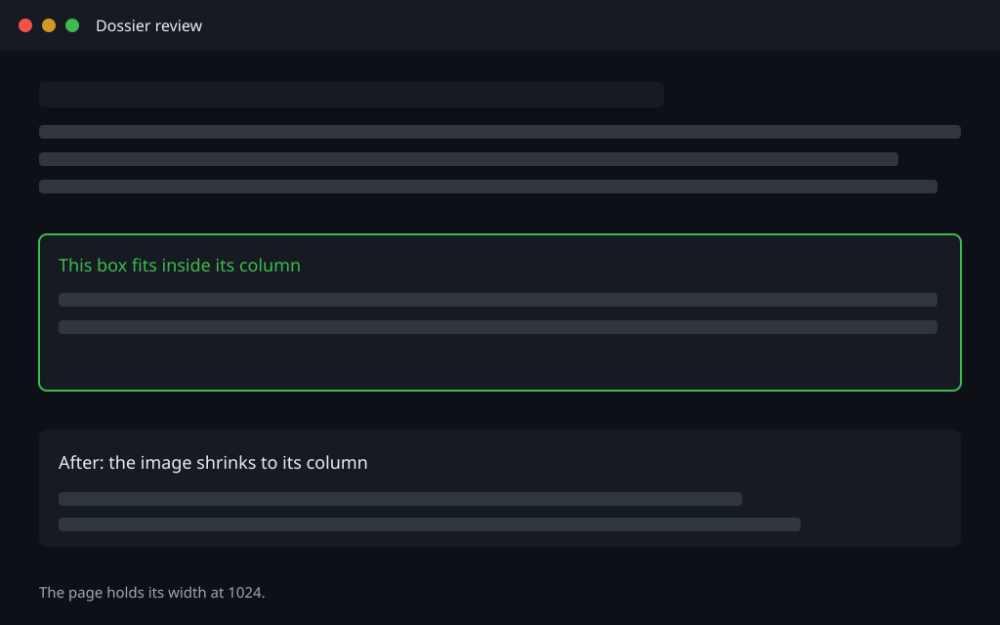

A worker dossier built from the layout block in worker/preamble.md. The long paths and the long code line below wrap inside their boxes, and the page keeps its width at 1280 and 1024.
| File | Change |
|---|---|
tests/test-watch-supervisor.sh |
Adds a watchdog case that starts a second supervisor and expects the duplicate to be refused with the running pid named. |
lib/report-diffs.mjs |
The layout pass runs over a full document and reports the offending line, the same way the prose pass does. |
worker/preamble.md |
Carries the layout block and the two-width check a capo runs before reporting ready. |
$ ./tests/test-report.sh --filter /home/lauri/.treehouse/kingpin-edca9a/3/kingpin/tests/test-watch-supervisor-2026-11-03T16-02-odd-and-very-long-run-identifier-0123456789abcdef.sh
APPROVE
One finding, already fixed: the noir template's code and table cells now carry the same wrap rule.
archive//home/lauri/.treehouse/kingpin-edca9a/3/kingpin/tests/test-watch-supervisor-2026-11-03T16-02-odd-and-very-long-run-identifier-0123456789abcdef.sh |


worker/preamble.md modified@@ -1,2 +1,6 @@ +## Dossier layout + +Every dossier carries this block.